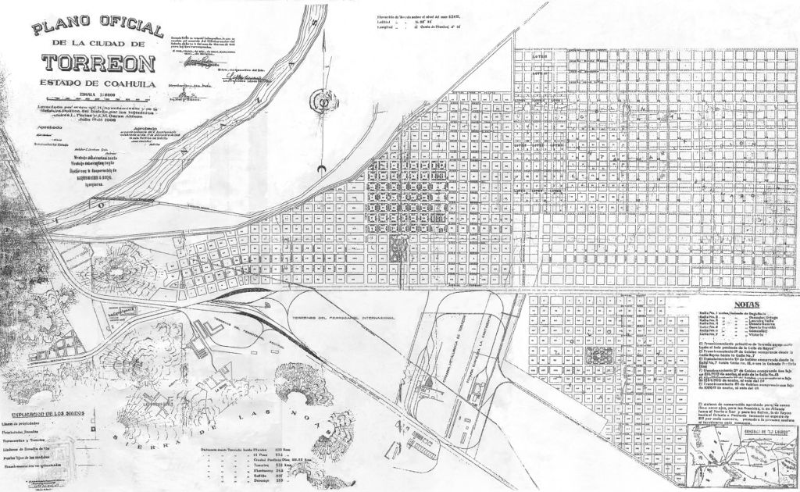
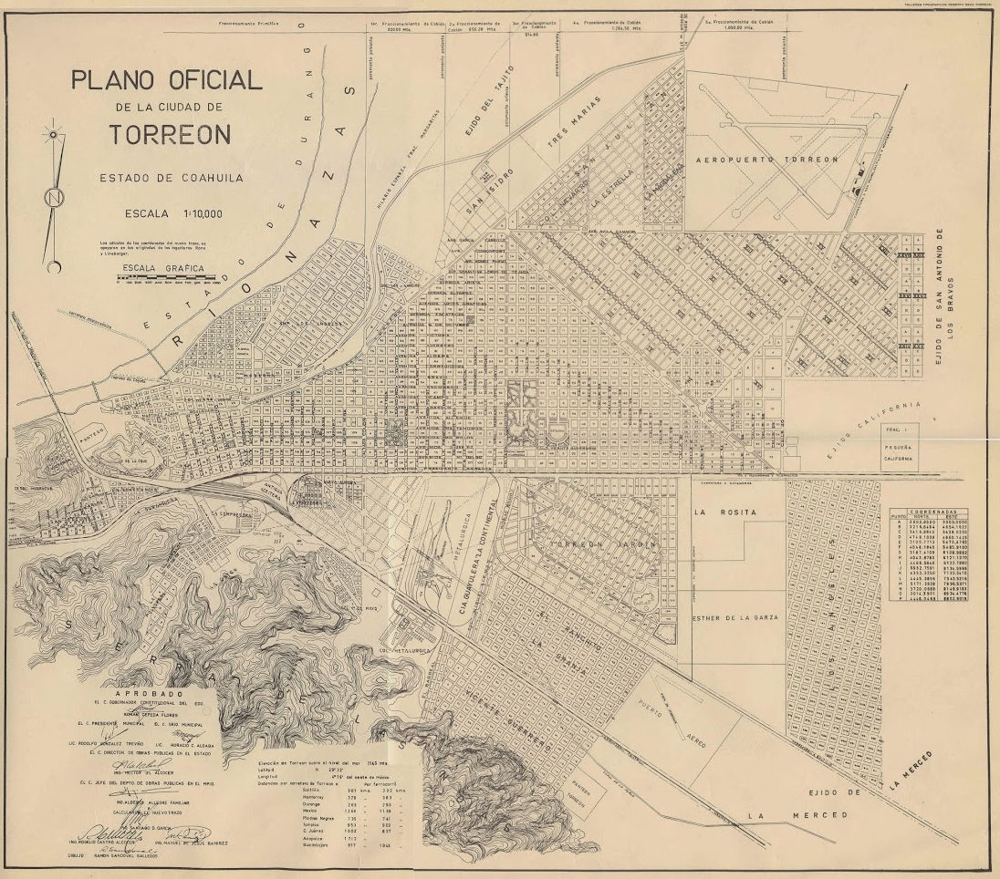
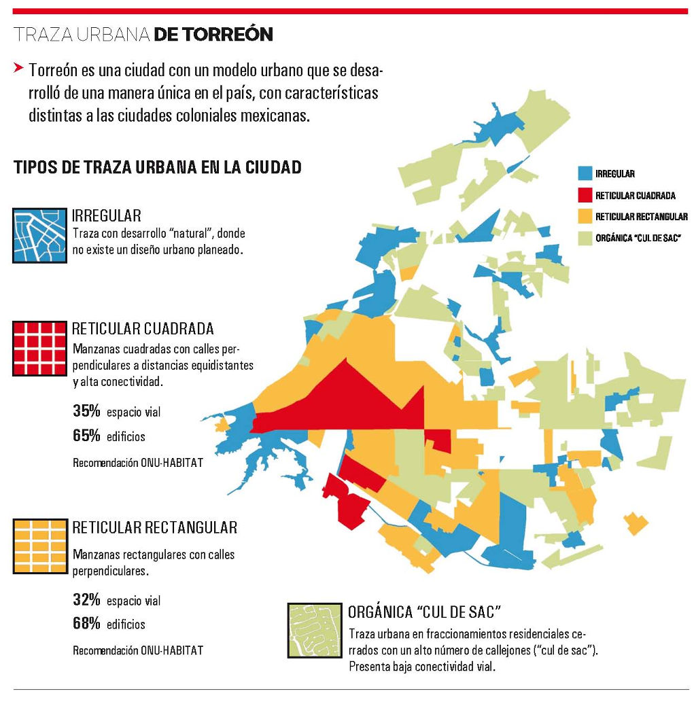

La ciudad es una estructura compleja donde diariamente se negocia el espacio entre sus habitantes, ya sea privado o público. Esta estructura, en su dimensión más superficial, se organiza mediante el acomodo de sus llenos y vacíos, es decir sus edificaciones, vialidades, parques, plazas, espacios baldíos etc.
La morfología urbana estudia la forma de los asentamientos humanos, donde la distribución y acomodo de los edificios y calles dan lugar a una estructura llamada traza urbana. Estas formas ya sean planificadas o de crecimiento “natural” son el soporte de las actividades cotidianas que se dan en una ciudad y determinan de forma directa aspectos como su movilidad, conectividad, salud pública, equidad, productividad, seguridad, calidad de vida etc.
Este acomodo de edificios/calles y llenos/vacíos debe su forma a diferentes condiciones históricas, topográficas, orográficas, económicas, de movilidad, sociodemográficas etc. Es decir, una traza urbana no será la misma de una ciudad medieval ubicada en la costa, que una ciudad contemporánea en un valle.
El tipo de traza urbana más primitivo es la morfología irregular, de crecimiento aparentemente caótico y caprichoso; llamado también de “plato roto”. Los edificios se acomodan sin algún orden lógico, dando lugar a calles estrechas y sinuosas, donde la línea de fachada es también irregular así como las alturas de los edificios. Responde directamente a la ausencia de normativa en planeación urbana y tenencia de la tierra, y generalmente puede encontrar en cascos históricos, sin embargo puede seguirse presentando en asentamientos irregulares contemporáneos. La escala y forma de esta morfología a su vez responde al modo de transporte utilizado: generalmente peatonal o de tracción animal.
Posteriormente llegan las nuevas ideas de orden urbano, donde la infraestructura básica como agua potable, drenaje, alumbrado público y electricidad, plantea la necesidad de ensanchar y reticular las calles, dando lugar a espacios con mejor conectividad, higiene e iluminación.
Es aquí donde aparece la traza urbana reticular (también llamada ortogonal o de Damero) donde las calles se distribuyen a distancias regulares e intersectan perpendicularmente, resultando en manzanas cuadradas.
Ciudades coloniales como México, Puebla o Morelia, se regían por ordenanzas urbanísticas dictadas en la Ley de Indias donde se debía trazar la Plaza Mayor o de Armas y en su entorno instalar el poder religioso (catedral o parroquia principal), el poder legislativo (ayuntamiento o cabildo) y el centro comercial más importante. Esta legislación urbana daba también como resultado una traza urbana de tipo reticular, que se replicó en la mayoría de las ciudades nacionales, siendo Torreón la excepción.
Antecedentes de Torreón
Torreón es una ciudad con un modelo urbano que se desarrolló de manera única en el país, con características distintas a las ciudades coloniales mexicanas.
Su origen urbano comienza con la llegada del Ferrocarril Internacional al “Rancho del Torreón” en 1888, donde Andrés Eppen, representante de Rapp, Sommer y Compañía encargó al Ing. Federico Wulff el trazo de algunas cuadras urbanas tomando como origen el cruce de vías del Ferrocarril Central con el Ferrocarril Internacional.
Wulff aplica ideas norteamericanas de urbanismo donde el eje principal de diseño recae en obtener el mayor provecho inmobiliario/económico, dimensionando las manzanas en 100x100 varas castellanas y las vialidades en 25 varas de ancho, siguiendo un alineamiento a las vías del ferrocarril. Wulff, al no contar con sus instrumentos de medición en la ciudad, comete un error de equivalencias métricas y traza las cuadras y calles un tanto más grandes de lo planeado.
En 1897, el Coronel Carlos González adquiere de Andrés Eppen los terrenos proyectados para urbanizarse del “Rancho del Torreón”, y solo un año después, éste vuelve a venderlos al algodonero español Feliciano Cobian.

Siguiendo el estricto diseño reticular de Federico Wulff, Cobián decide fraccionar el oriente de la villa dividiéndolo en 5 sectores: “Primero de Cobián”, de la calle Rayón (actual Calzada Colón) hasta la C. Francisco I. Madero; “Segundo” de C. Francisco I. Madero a Calz. Cuauhtémoc; “Tercero” de Calz. Cuahutémoc a Calle 18; “Cuarto” de Calle 18 a Calle 30; y “Quinto” de Calle 30 a Calle 40 (actual Saltillo 400).
Estos 5 “Fraccionamientos de Cobián”, en conjunto con el “Fraccionamiento Primitivo” constituyen un primer sector “Triangulo Centro” delimitado por los actuales Blvd. Revolución al Sur, Blvd. Independencia al Noroeste y Blvd. Diagonal Reforma al Noreste.
El posterior crecimiento de la ciudad significó el desborde del “Triangulo Centro” desarrollando nuevas colonias como Moderna, Los Angeles y Torreón Jardín, modificando la traza urbana al adaptarse a límites de propiedad, antiguos caminos, canales de riego etc. Esta pérdida de orden en la morfología de Torreón, consecuencia de una falta de planeación urbana a mediano y largo plazo, trajo consigo problemas como desconexión vial, cruceros conflictivos, alta necesidad de movilidad motorizada y condiciones viales propicias para la privatización y clausura de los fraccionamientos.

Por todo esto, el Instituto Municipal de Planeación y Competitividad de Torreón dedica esfuerzos para diseñar instrumentos de planeación donde se privilegie el diseño urbano y la normatividad, por encima de intereses privados y mercado inmobiliario. La traza urbana elegida, debe responder a su capacidad por generar espacio público, conectividad, movilidad sustentable, equidad social etc.; todo con el último fin de elevar la calidad de vida de los habitantes.
Traza urbana y calidad de vida
¿Cómo se relaciona la estructura y traza de una ciudad con la calidad de vida de sus pobladores? Estudios proponen que la manera en que están dispuestos los edificios y las calles de una ciudad, tiene efectos directos sobre diferentes aspectos urbanos:
- Conectividad: La frecuencia en que las calles se cruzan unas con otras genera un mayor grado de conectividad, propiciando centros urbanos accesibles y conectados. Una mayor densidad de intersecciones viales facilita el acceso a espacios públicos, servicios urbanos y transporte público.
- Equidad Social: Una morfología urbana regular y homogénea propicia un sentido de equidad social, donde todos los espacios son accesibles para todos los sectores socioeconómicos. La generación de barrios cerrados fragmenta la ciudad física y socialmente.
- Salud Pública: Vialidades anchas y rectas facilitan el acceso a la luz natural así como corrientes de aire y un adecuado servicio de recolección de desechos; en contraste a los sectores de traza irregular y calles angostas, condiciones que pueden propiciar la falta de higiene y propagación de enfermedades.
Fuentes
- Eduardo Guerra. (2006). Historia de Torreón. Torreón, Coahuila: Republicano Ayuntamiento de Torreón, Coahuila.
- Luis Carlos Herrera Favela. (2009). Anatomía de la Memoria. El patrimonio construido en el Conjunto Histórico de Torreón. Buenaval, 7, 85.
- Carlos Castañón Cuadros (2014). Fraccionamientos de Cobián. Entre la historia y el presente.
Infografía
